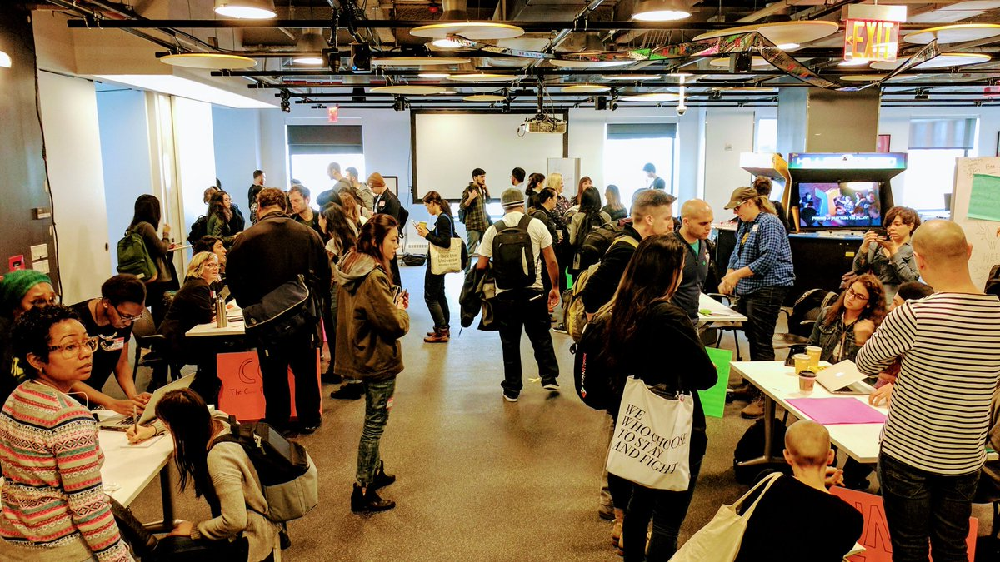

notes from a civic hackathon
Hack The Ban was an anomaly among tech events, with a focus on building relationships between local activist groups and the local tech community. Though the event was formed in response to the immigration executive order, organisations representing immigration rights/marginalised communities have existed for a very long time. Startup folk have an impulse to prop up new solutions when they see problems, which is great in many cases, but sometimes it is also worth considering joining forces with organisations that have intimate ties with and understanding of the community they are serving, a decade of work, and a diversity of skillsets and backgrounds and experiences.
Because it was a single day event, there was no sleep deprivation necessary, and due to the motivation/theme, the usual competitive factor that makes ordinary hackathons unappealing to some types of people (me!) was noticeably absent. Everyone wins at a civic hackathon (:
>mingling
In the last few months I’ve been waving my hands in the dark around the question: “how can I be an effective activist? what do non-profits need from technologists?” After a morning welcome speech and warm coffee of happiness, there was a sort of non-profit club fair, where technologists got to ask questions and hear from organisers about their tech needs and the needs of the community.

Some thoughts and observations:
- woah there’s no dedicated developer at a lot of these orgs. so it’s important that any tech setup (website, electronic donations page, email list) is very simple, readily safe/secure, and requires very little training
- many orgs seem to feel a need for something (e.g. infographics, pamphlets, data visualisations) but can’t exactly articulate what it is. it is our job as technologists to extract their needs from listening to their goals, in a way that reminds me of being a tech consultant.
- many things are done by hand (e.g. managing mailing lists). a no-background-knowledge-assumed kit/guide to automating these tasks could free up a lot of time/resources (but be careful of investment and maintenance time-cost)
- with orgs that serve specific communities, multilingual accessibility is very important.
>hacking
Most of the participants came as individuals, and self-organised into groups that paired with the non-profits. I ended up among a wide range of experience and skillsets, and it was super cool watching everyone come together and the more senior folks take leadership, ask focused questions, and delegate. Thoughts from the hacking portion:
- project management and delegation is SO. IMPORTANT. good management is a productivity multiplier!
- it’s great to be a generalist who can jump into things and figure out how existing stuff works
- consultant skills are very useful – trying to decide tech stack, experience with working with different tools, pros/cons of various options
- someone brought their graphics tablet, which was an excellent idea. I’m 100% throwing my wacom into my backpack next time for emergency wireframing/design prototyping
- as with an ordinary hackathon, have project templates, communication channels, and staging environments ready to save precious time (but unlike an ordinary hackathon, it’s uncertain what existing systems we’d come across)
I left feeling optimistic, with a reminder to be patient – it can be slow to find your footing within a space, be it industry or volunteering, because fundamentally it is about human relationships, which takes time. Slow is ok. I’m doing what I can.
comments
No comments at the moment \o/ Hey, you could write one!
leave a comment
I really like comments!! Easy mode: email comments@daiyi.co, @ me or send a twitter dm. Hard mode: Make a PR.